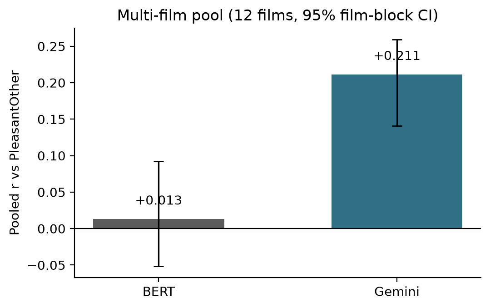

Validating language-model emotion labels against human consensus in naturalistic film fMRI
Continuous human emotion ratings for naturalistic film are not interchangeable with dialogue-based transformer scores. Under a gated multi-subject pipeline, occipital cortex does not decode valence, while a priori affective ROIs show small, film-dependent signals that survive visual residualization of the target. Expanding from one valence item to 50 GRID annotations changes both the text and brain pictures.
Four findings worth a paper
At a glance



Why this is publishable
- Open primary data (Emo-FilM; Morgenroth et al., 2025, Scientific Data).
- Pre-specified low-motion subjects and a priori affective ROIs.
- Positive control + shift-null (not naïve p-values on autocorrelated series).
- 50-item expansion of both NLP and brain arms — rare in film-fMRI + LLM work.
- Honest nulls (occipital; ToS affective) are findings.
Links
- Results (text · brain · physio · multimodal)
- Methods · Data · Reproduce · Status
- GitHub repository
- OpenNeuro: ds004872 (annotations), ds004892 (fMRI)
Cite
Primary dataset: Morgenroth, E., et al. (2025). Emo-FilM… Scientific Data 12, 684. doi:10.1038/s41597-025-04803-5.
This reanalysis: Le, T. T. (Jessica) & Le Thanh Nhan, A. (2026). emotion-label-validation-fmri — code and results. github.com/AlbertCosmo/emotion-label-validation-fmri · site: albertcosmo.github.io/projects/emotion-label-validation-fmri/